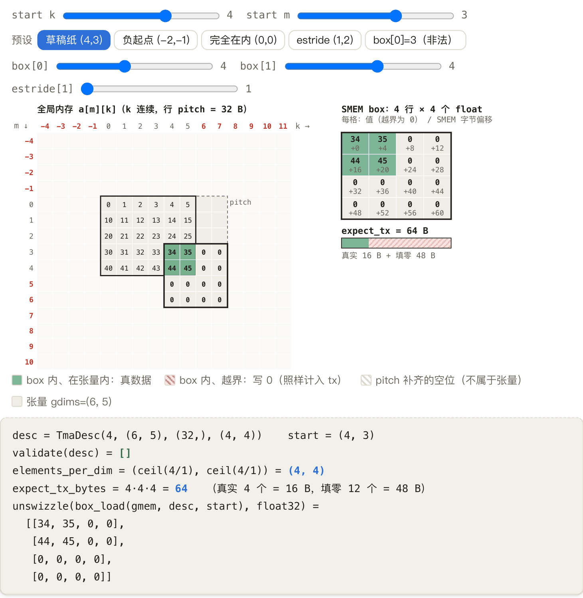
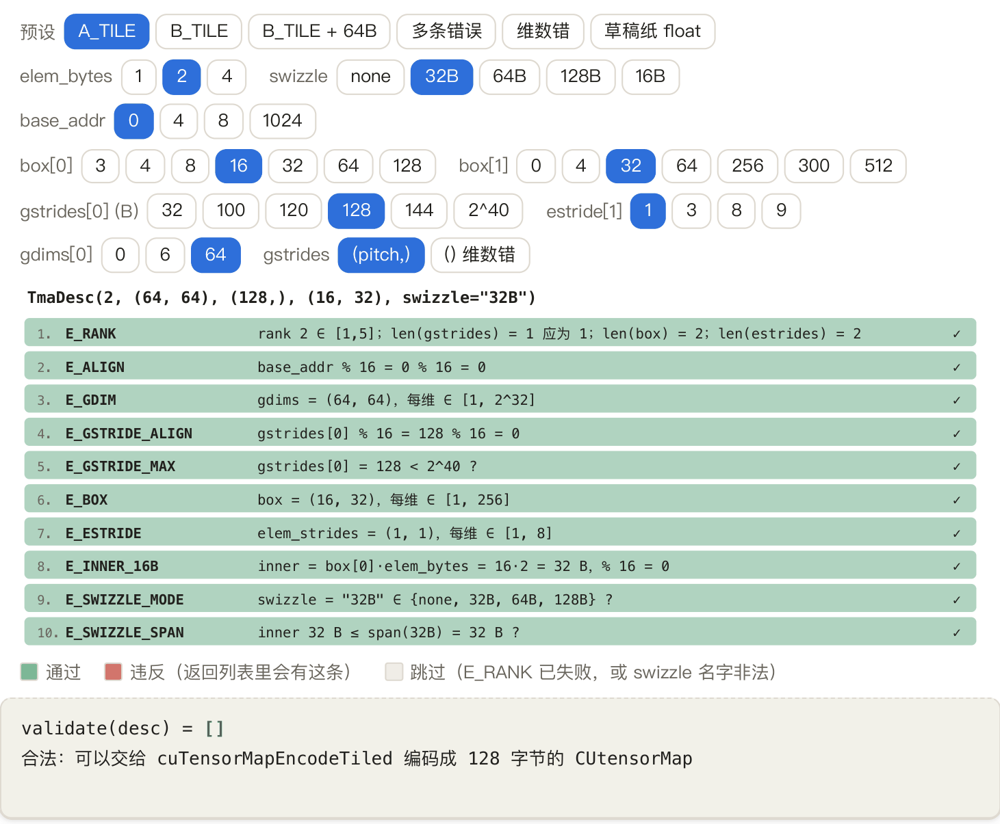
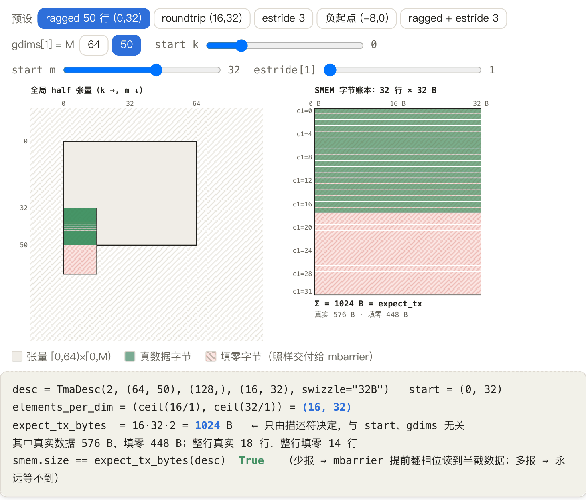
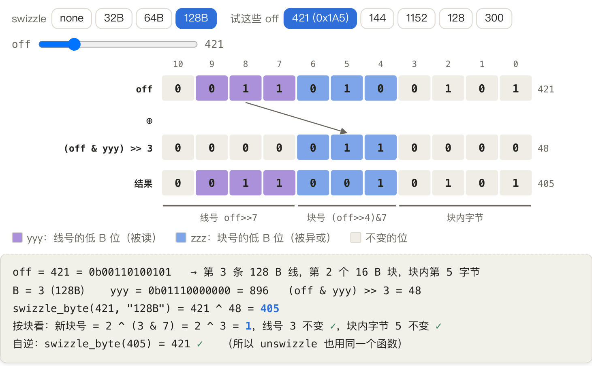
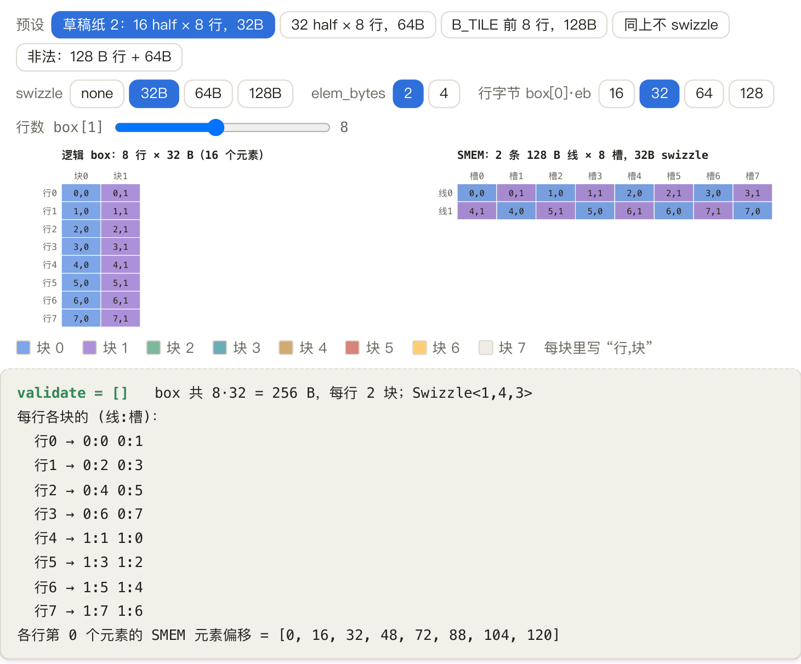

D1 · TMA box：描述符合法性、expect_tx、越界填零与 swizzle 后的 SMEM 位置
把 TMA 加进 GEMM 的第一步：生产者不再让 128 个线程各算地址，而是由一个线程发一条带“张量描述符”的指令，硬件把整块 box 搬进 shared memory。本题复刻 CuTe 建描述符时检查的硬件限制，算出 mbarrier 要等的字节数，模拟越界填零，并和真实 CuTe 的 GMMA swizzle atom 在真实 smem 指针上逐个地址对拍。
文件: mine/d1_tma_box.py 你的代码 · tests/test_d1_tma_box.py 测试 · solutions/d1_tma_box.py 参考解
题面速览
- 背景知识：先读 时间维度 的 TMA 一节；swizzle 的位运算在 A3 已经做过。
- 在体系里的位置：CuTe 的
make_tma_copy最终调用 make_tma_copy_desc：从 gmem tensor 的 layout 推出维度、字节 stride、box，用一串assert检查硬件限制，再调用驱动的cuTensorMapEncodeTiled。swizzle 模式由 smem atom 决定（get_tma_swizzle_bits），atom 本身定义在 mma_traits_sm90_gmma.hpp。 - 你要实现：
validate、elements_per_dim、expect_tx_bytes、swizzle_byte、smem_byte_offset、box_load、unswizzle、tile_element_map。SWIZZLE_B、SWIZZLE_SPAN、TmaDesc已经给出。 - 关键规则：
- 所有元组最内层在前；
gstrides是维度 1 起的字节 stride，维度 0 的 stride 隐含为一个元素。 - 十条合法性规则按固定顺序检查、全部报告；维数对不上时只报
E_RANK。 expect_tx_bytes = Π ceil(box[i] / elem_strides[i]) × elem_bytes，越界填零的部分也算。- swizzle 作用在 SMEM 字节地址上：
Swizzle<B,4,3>，B = 1/2/3 对应 32B/64B/128B。
- 所有元组最内层在前；
验收要点：合法描述符 · 每条规则各自触发 · swizzle 跨度规则 · 维数错误只报一条 · 多条错误同时报告 · expect_tx（1024、8192、越界仍 8192、带 element stride 的 352 和 4096）· 三种字节 swizzle 的单点值、自逆、16 字节块不拆、不出 128 字节行 · 三种 box 的元素位置与真实 CuTe 的 GMMA atom（tile_to_shape 后放在 smem 指针上）逐个相同 · box 往返、越界填零、负起点、element stride、非法描述符报错。
- TMA（Tensor Memory Accelerator）：Hopper（SM90）起的张量搬运单元。一个线程发
cp.async.bulk.tensor，硬件按描述符搬一整块。 - 描述符（
CUtensorMap）：128 字节的对象，记录全局 tensor 的基址、各维长度、字节 stride、box 大小、element stride、swizzle 模式。由主机端的驱动 API 编码，kernel 里只读。 - box：一次 TMA 搬运的矩形子块。element stride：box 内每隔几个元素取一个。
- mbarrier：shared memory 里的异步屏障。TMA 搬完后在它上面“交付”字节数；消费者等它。D2 专门讲。expect_tx：生产者预先告诉 mbarrier“这一轮要来多少字节”。
- GMMA / WGMMA（warp-group 级矩阵乘指令）：直接从 SMEM 读操作数，所以 SMEM 的 swizzle 必须是它认得的几种。
直觉与类比
以前取货（线程协作 copy）是 128 个人每人拿一张小纸条去货架找自己那几件；TMA 是只写一张“发货单”（描述符 + 起点坐标）交给叉车。发货单有格式要求：货架编号要对齐、每层间距要是 16 的倍数、一次最多 256 件（这些就是 validate 的十条规则）。叉车按单子把整托货送到你的库位，并在门口的签收板（mbarrier）上记“到了 8192 字节”；单子上写的范围超出货架的部分，叉车放空箱（填零），但空箱也算进字节数。库位里货怎么摆（swizzle），是事先约定的固定花样，叉车和取货的人（WGMMA）都按同一个花样来。
图解：一次 box load 的数据路径
从小例子开始：先在草稿纸上手算
先别管 64×64 的 bf16 tile。拿一个小到每个格子都能写出来的张量，把一次 box load 从头到尾手算一遍：描述符合不合法、mbarrier 要等多少字节、哪些格子是真数据、哪些是填出来的 0、每个元素落到 SMEM 的第几个字节。然后放大到测试里的尺寸，最后写成一般公式。
① 小：float 张量 6×5，box 4×4，部分越界
gdims=(K=6, M=5)，行 pitch 8 个 float = 32 B。box 从 (k, m) = (4, 3) 开始，右边和下边都伸出张量。
validate = []，elements_per_dim = (4, 4)
expect_tx = 4·4·4 = 64 B
真实 4 个元素 16 B + 填零 12 个 48 B
② 测试：A_TILE，half 的 16×32 box
gdims=(64, 64)，pitch 128 B，32B swizzle。ragged 版本只有 50 行，从 m=32 开始。
expect_tx = 16·32·2 = 1024 B
ragged：18 行真实（576 B）+ 14 行填零（448
B）
B_TILE 64×64 bf16，128B swizzle：8192 B
③ 边界情况：element stride、负起点、swizzle
elem_strides=(1,3)：ceil(32/3)=11 行 →
352 B
start=(-8, 0)：前 8 列填零（卷积 halo）
32B swizzle：第 4..7 行的两个 16 B 块对调
④ 一般把 ①–③ 里的规律写成公式。
epd[i] = ceil(box[i] / estride[i])
tx = Π epd[i] · elem_bytes
g[i] = start[i] + c[i]·estride[i]
越界 ⇔ 某一维 g[i] < 0 或 g[i] ≥ gdims[i]
SMEM = Sw<B,4,3>(elem_bytes ·
colex(c, epd))
✎ 草稿纸 1：float a[m][k]，gdims=(6, 5)，gstrides=(32,)，box=(4, 4)，start=(4, 3)，不 swizzle
约定：a[m][k] 的值写成 10m + k（34 就是 m=3, k=4）。内存里每行 8 个 float（32 B），k = 6, 7 是 pitch 补齐的空位。
1) validate rank 2：gdims / gstrides / box / estrides 长度 2,1,2,2 ✓ base 0 % 16 = 0 ✓ gdims 6, 5 ∈ [1, 2^32] ✓ gstrides 32 % 16 = 0 ✓，32 < 2^40 ✓
box 4, 4 ∈ [1, 256] ✓ estrides 1, 1 ∈ [1, 8] ✓
inner = box[0]·elem_bytes = 4·4 = 16 B，16 % 16 = 0 ✓ swizzle
"none" ✓ → []
对比：pitch 若写成 6 个 float = 24 B → E_GSTRIDE_ALIGN；box[0] 若是 3 → 12 B →
E_INNER_16B
2) 字节数 elements_per_dim = (ceil(4/1), ceil(4/1)) = (4, 4)
expect_tx_bytes = 4 · 4 · 4 B = 64 B ← 和起点无关，只看描述符 3) 逐个 box 坐标 c = (c0, c1)，g = (4 + c0, 3 + c1)： （0 ≤ g0 < 6 且 0 ≤ g1 < 5 才是真数据）
c1=0 → m=3： k = 4 5 6 7 → 34 35 0 0 ← k=6,7 在 pitch 空位
里，但 ≥ gdims[0]=6，填 0
c1=1 → m=4： k = 4 5 6 7 → 44 45 0 0
c1=2 → m=5： m=5 ≥ 5 → 0 0 0 0
c1=3 → m=6： m=6 ≥ 5 → 0 0 0 0
真实 4 个元素 = 16 B，填零 12 个 = 48 B，合计仍是 64 B = expect_tx ✓
4) 地址 源（全局字节）= g0·4 + g1·32 目的（SMEM 字节）= 4·(c0 + 4·c1)，不
swizzle
c=(0,0) g=(4,3)：src = 16 + 96 = 112 dst = 0
c=(1,0) g=(5,3)：src = 20 + 96 = 116 dst = 4
c=(0,1) g=(4,4)：src = 16 + 128 = 144 dst = 16
c=(1,1) g=(5,4)：src = 20 + 128 = 148 dst = 20
c=(3,3) g=(7,6)：越界，dst = 60 处写 0
5) 负起点 start=(-2, -1)： m=-1 → 0 0 0 0 │ m=0 → 0 0 0 1 │ m=1 → 0 0 10 11 │ m=2 → 0 0 20 21
element stride (1, 2)，box=(4, 3)：epd = (4, ceil(3/2)) = (4, 2)，只取 m = 0, 2 两
行，tx = 4·2·4 = 32 B
✎ 草稿纸 2：half 的 box=(16, 8)，32B swizzle：SMEM 里每个 16 B 块去哪
inner = 16·2 = 32 B ≤ 32（E_SWIZZLE_SPAN 通过）。box 共 8 行 × 32 B = 256 B = 两条 128 B
线。
第 r 行的两个 16 B 块：线性字节 32r（块 0）和 32r + 16（块 1）。
Swizzle<1,4,3>：把第 7 位（第几条 128 B 线的最低位）异或进第 4 位（块号的最低位）
r = 0..3：32r < 128，第 7 位 = 0 → 不动
r = 4..7：32r ≥ 128，第 7 位 = 1 → 第 4 位翻转 → 块 0 和块 1 对调
r=4：块 0 128 = 0b1000_0000 → 0b1001_0000 = 144 块 1 144 → 128
r=5：块 0 160 → 176 块 1 176 → 160
所以 smem_byte_offset((k=0, m=4)) = 144，换成元素就是 72：tile_element_map(8, 16, 2,
"32B")[:8] = [0, 16, 32, 48, 72, 88, 104, 120]
128B 模式同理，只是 3 位：第 r 行（每行 128 B）的块 c 去 c ^ (r % 8)。
下面这张图就是草稿纸 1 的张量，可以随意移动 box、改 box 大小和 M 方向的 element stride。左边是全局内存（每格写值 10m+k，灰色斜线是 pitch 补齐的空位），右边是搬进 SMEM 的稠密 box。绿色是真数据，红色斜线是越界填零。下方面板打印 validate 、elements_per_dim 、expect_tx_bytes 和 unswizzle(box_load(...)) 应该返回的东西。先用默认预设对照草稿纸，再自己拖。

图解详解：描述符、字节数、越界与 swizzle
这些图是交互版讲解页的静态快照，显示的是默认参数下的状态。文中提到的按钮、滑块和悬停提示在这里不能操作；图上的数字和下方的文字、表格、黑底面板说的是同一组值，可以直接对照你的函数输出。
前面的流程图只给了三条互相独立的路径。这一节每条路径配一张可交互的图，每张对应一个或几个要实现的函数。点按钮、拖滑块、把鼠标停在格子上，下方面板会把当前状态逐步代入公式。
整道题在真实 kernel 里对应下面这几行伪代码。生产者 warp 的一个线程发 TMA，消费者等 mbarrier：
desc = make_tma_copy_desc(gA, smem_layout) # 主机端：layout → TmaDesc，validate 的十
# ---- kernel，生产者线程 ----
mbar.arrive_and_expect_tx(expect_tx_bytes(desc)) # 先报这一轮要来多少字节（图 2）
tma_load(desc, mbar, smem, start=(k0, m0)) # 硬件：逐个 box 坐标 → 全局坐标 → 越界写 0
# → SMEM 字节位置 = swizzle_byte(.
# ---- 消费者 ----
mbar.wait(phase) # tx 归零才放行：越界填零的字节也必须算进去
wgmma(smem, ...) # 按同一个 swizzle 读；CPU 上用 unswizzle
图 1 · 描述符合法性：validate 的十条规则
每条规则只看描述符本身，和起点无关。选一个预设，或者单独改某个字段，看哪几条变红。注意三件事：
- gstrides 是字节：128 B 合法，100 B 和 120 B 不是 16 的倍数。
E_INNER_16B和E_SWIZZLE_SPAN都看最内层一行的字节数box[0]·elem_bytes，不看整个 box。- 维数对不上（“gstrides=()”）时只报
E_RANK，后面九条直接跳过（灰色）。swizzle 名字不认识时也不再查跨度。

源码对照：这些检查在 make_tma_copy_desc 的 assert ，随后的驱动调用在 cuTensorMapEncodeTiled （注意gmem_prob_stride.data() + 1 ：维度 0 的 stride 隐含为一个元素，正是本题 gstrides 从维度 1 开始的原因）。驱动端的完整限制见 CUDA Driver API · Tensor Map Object Management。
图 2 · expect_tx 与越界填零：测试尺寸的 A_TILE
换到测试里的尺寸：half 张量 gdims=(K=64, M)，box=(16, 32)。左边是全局张量（每格 = 1 个 half，缩得很小），box 选中的每一行画成一条 16 元素的横条：绿色是真数据，红色斜线是越界。右边是 SMEM 里的字节账本：每一行 box 占 16·2 = 32 B，按行叠起来就是 expect_tx。默认是测试 test_box_load_out_of_bounds_fills_zero ：只有 50 行，从 m=32 开始，第 18 行起全部填零，但账本的总长度仍然是 1024 B。
试试 element stride = 3：box 的 32 行只取 m = 32, 35, …, 62 这 11 行，账本缩成 352 B。再试“负起点”：start=(-8, 0)，每行左半边越界。

源码对照：CUTLASS 的 Hopper 主循环把 tx 字节数写成编译期常量，就是整块 smem tile 的大小，根本不看边界，见 TmaTransactionBytes ；它被交给 arrive_and_expect_tx （PTX mbarrier.arrive.expect_tx ）。TMA 指令本身是 SM90_TMA_LOAD_2D 里的 cp.async.bulk.tensor.2d…mbarrier::complete_tx::bytes 。CuTe 编码描述符时选的CU_TENSOR_MAP_FLOAT_OOB_FILL_NONE （copy_traits_sm90_tma.hpp ）就是“越界填 0”（另一种选项是填 NaN）。PTX 文档里对应的几节：cp.async.bulk.tensor、tiled 模式的 bounding box、traversal stride（element stride）、越界访问；CUDA 编程指南的 Using TMA to transfer multi-dimensional arrays 有完整的主机端编码 + kernel 端 expect_tx 示例。
图 3 · swizzle_byte ：Swizzle<B,4,3> 在字节地址上读哪几位、写哪几位
把字节偏移写成二进制，从右往左分三段：bit 0–3 是 16 B 块内的字节（永远不动），bit 4–6 是 128 B 线里的第几个 16 B 块，bit 7–9 是第几条 128 B 线。swizzle 只做一件事：把线号的低 B 位异或进块号的低 B 位。所以块不会被拆开（低 4 位不动），数据也不会离开自己的 128 B 线（第 7 位以上不动）。

> 3)，yyy = ((1<<B)−1) << 7" loading="lazy" style="width:100%;aspect-ratio:1461/903">源码对照：通用的 cute::Swizzle<B,M,S> （注释里的 YYY / ZZZ 图示就是上面这三行），作用在指针字节地址上的是 swizzle_ptr::apply_swizzle 。PTX 对四种模式的官方画法见 Tensor swizzling modes。
图 4 · box → SMEM：每个 16 B 块落在哪条线的哪个槽
左边是逻辑 box：每行 box[0]·elem_bytes 字节，切成 16 B 的块，块按行内序号上色（块 0 蓝、块 1 紫……）。右边是 SMEM：每行一条 128 B 线、8 个 16 B 槽。不 swizzle 时颜色一列一列排得整整齐齐；打开 swizzle 后，同一种颜色（同一列 k 的数据）在不同行落到不同的槽里，这就是 WGMMA 和 TMA 读写都没有 bank conflict 的原因。默认是草稿纸 2：half 的 16×8 box、32B swizzle，第 4–7 行两块对调。

源码对照：GMMA 的 smem atom（Layout_K_SW32/64/128_Atom ）在 mma_traits_sm90_gmma.hpp ，atom 的Swizzle<B,4,3> 被 get_tma_swizzle_bits 翻译成 TMA 的 swizzle 模式：TMA 写和 WGMMA 读必须用同一个花样。
速查
| 函数 | 公式 | 小例子（草稿纸） | 测试尺寸 |
|---|---|---|---|
validate(desc) |
先查 rank / 长度，不对只报 E_RANK；再按顺序查 ALIGN · GDIM ·GSTRIDE_ALIGN ·GSTRIDE_MAX · BOX ·ESTRIDE · INNER_16B ·SWIZZLE_MODE / SPAN | float (6,5)，pitch 32 → []；pitch 24 → E_GSTRIDE_ALIGN | B_TILE + "64B" → 只有 E_SWIZZLE_SPAN |
elements_per_dim |
ceil(box[i] / estride[i]) | (4,3)，estride (1,2) → (4,2) | (16,32)，estride (1,3) → (16, 11) |
expect_tx_bytes |
Π elements_per_dim ·elem_bytes（越界也算） | 4·4·4 = 64（真实 16 + 填零 48） | 1024 · 8192 · 352 |
swizzle_byte(off, m) |
off ^ ((off & (((1<<B)−1)<<7)) >> 3) | 32B：128 → 144 | 128B：421 → 405，1152 → 1168 |
smem_byte_offset |
swizzle_byte(eb · (c0 + epd0·c1 + …)) | (k=0, m=4)，half 16 宽，32B → 144 | B_TILE (0, 1) → 144 |
box_load |
g = start + c·estride；越界写 0；src = g0·eb + Σg[i]·gstrides[i−1] | start (4,3) → [[34,35,0,0],[44,45,0,0],0…] | 50 行 ragged：tile[18:] == 0 |
unswizzle |
out[i·eb] = smem[swizzle_byte(i·eb)]（自逆） | 还原出的逻辑 tile 与 numpy 切片相同 | |
tile_element_map |
out[m + rows·k] = swizzle_byte((m·inner + k)·eb) // eb | (8, 16, 2, "32B") 每行首元素 0,16,32,48,72,88,104,120 | (64, 64, 2, "128B") 每行首元素 0,72,144,216,… |
三件事互相独立：合法性只看描述符，越界只看起点和 gdims，SMEM 位置只看 box 内坐标和 swizzle。expect_tx 只看描述符，所以它可以在编译期写成常量。
逐步演示
inner box = 64 × 2 = 128 字节：是 16 的倍数（E_INNER_16B 通过），且不超过 128B swizzle 的跨度（E_SWIZZLE_SPAN 通过）。行 pitch 128 字节是 16 的倍数。validate(B_TILE) == []。同一个 box 换成 "64B" 就只报一条：E_SWIZZLE_SPAN: inner box 128 bytes > 64B swizzle span。
expect_tx_bytes(B_TILE) = 8192。A 的 16×32 half box 是 1024。如果 M 方向 element stride 取 3，box 32 行只取 ceil(32/3) = 11 行：elements_per_dim = (16, 11)，352 字节。生产者在 arrive_and_expect_tx 里报的就是这个数，报错了 mbarrier 永远等不到（D2）。
box 坐标 (k=0, m=r) 的线性字节偏移是 128r，swizzle 后：[0, 144, 288, 432, 576, 720, 864, 1008]。也就是第 r 行的第 0 个 16 字节块被放到第 r % 8 块上。换成元素偏移就是 [0, 72, 144, 216, …]，正是元素域的 Swizzle<3,3,3>。01234567 01234567 01234567
把真实的 GMMA::Layout_K_SW128_Atom<half_t> 用 tile_to_shape 铺成 64×64，放到一个 smem 指针上，读 &t(m,k) − base：4096 个元素全部等于 tile_element_map(64, 64, 2, "128B")。32B、64B 两种 atom 也一样（test_tile_element_map_matches_gmma_swizzle_atoms）。
易错点
- 把 atom 打印出来的
Sw<3,4,3>当成元素域的 swizzle。Sw<3,4,3> o smem_ptr[16b](unset) o (_8,_64):(_64,_1)里的 swizzle 作用在指针的字节地址上（apply_swizzle 对uintptr_t做异或）。直接对 layout 求整数值会得到第 1 行不动（64），真实地址是 72。测试test_tile_element_map_matches_gmma_swizzle_atoms。 - gstrides 写成元素数。 TMA 的 stride 是字节；40 个 half 一行要写 80。测试
test_box_load_fills_out_of_bounds_with_zero用的就是 80 字节的 pitch。 - 越界的元素不算字节。 硬件照样把填零的字节交付给 mbarrier；少报会让 tx 永远不归零。测试
test_expect_tx_counts_every_box_element。 - 负起点当作错误。 box 起点可以是负数（卷积的 halo 常见），越出的部分填零。测试里
start = (-8, -4)。 - swizzle 跨度只看 box 总大小。 规则看的是最内层一行的字节数（
box[0] × elem_bytes），不是整个 box。 - 维数错时继续检查。 长度对不上时后面的逐维检查会越界；和 CuTe 一样先报
E_RANK就返回。
对照文档
“TMA（Tensor Memory Accelerator）允许由指定线程/warp 发起描述符驱动的多维数据搬运，由硬件执行大块 tensor transfer。Layout 仍然重要：描述 tensor 的形状、stride、shared-memory 排布以及 swizzle 等……所以 TMA 并没有让 Layout 失去意义；它改变的是‘执行搬运的机制’，而不是‘数据坐标和物理排布’这件事。”
本题就是这句话的具体内容：描述符里的每个字段都来自 gmem layout，SMEM 排布来自 smem atom；box_load 之后用 unswizzle 还原出的逻辑 tile 和 numpy 切片完全相同，变的只是“谁来搬”。
真实代码
CuTe 建描述符时检查的硬件限制（简化自 make_tma_copy_desc）：
assert((reinterpret_cast<uint64_t>(gmem_address) & 0b1111) == 0); // Address must be 16B-aligned
assert(gmem_prob_shape[i] >= 1 && gmem_prob_shape[i] <= (uint64_t(1) << 32));
assert(gmem_prob_stride[0] == 1 && "Majorness of smem doesn't match majorness of gmem");
assert((gmem_prob_stride[i]) < (uint64_t(1) << 40)); // Stride must be max 2^40
assert((gmem_prob_stride[i] & 0b1111) == 0); // Stride must be multiple of 16B
assert(smem_box_shape[i] >= 1 && smem_box_shape[i] <= (uint32_t(1) << 8)); // max 256
assert(smem_box_stride[i] >= 1 && smem_box_stride[i] <= 8);
E_INNER_16B 和 E_SWIZZLE_SPAN 不在这段 assert 里：它们是 CUDA 驱动文档对 cuTensorMapEncodeTiled 的要求，违反时由驱动返回错误。atom 到 TMA 模式的映射在 get_tma_swizzle_bits：M == 4（16 字节块）时 B = 0/1/2/3 分别是 DISABLE / B32 / B64 / B128。
真实代码
CuTe 建描述符时检查的硬件限制，简化自 make_tma_copy_desc ：
assert((reinterpret_cast<uint64_t>(gmem_address) & 0b1111) == 0); // Address must be 16B-
assert(gmem_prob_shape[i] >= 1 && gmem_prob_shape[i] <= (uint64_t(1) << 32));
assert(gmem_prob_stride[0] == 1 && "Majorness of smem doesn't match majorness of gmem");
assert((gmem_prob_stride[i]) < (uint64_t(1) << 40)); // Stride must be max 2^40
assert((gmem_prob_stride[i] & 0b1111) == 0); // Stride must be multiple of 16B
assert(smem_box_shape[i] >= 1 && smem_box_shape[i] <= (uint32_t(1) << 8)); // max 256
assert(smem_box_stride[i] >= 1 && smem_box_stride[i] <= 8);
E_INNER_16B 和 E_SWIZZLE_SPAN 不在这段 assert 里：它们是 CUDA 驱动文档对 cuTensorMapEncodeTiled 的要求，违反时由驱动返回错误。
swizzle 作用在字节地址上，简化自 swizzle_ptr::apply_swizzle ：
template <class T>
static T* apply_swizzle(T* ptr) {
return reinterpret_cast<T*>(SwizzleFn::apply(reinterpret_cast<uintptr_t>(ptr)));
}
atom 到 TMA 模式的映射，简化自 get_tma_swizzle_bits ：M == 4 （16 字节块）时 B = 0/1/2/3 分别是 DISABLE / B32 / B64 / B128 。
上机验证
playground/run.sh playground/d1_tma_box.cpp # 真实 CuTe 的 GMMA atom 放在真实 smem 指针上
./check.sh oracle d1 # 重新生成 tests/golden/d1_tma_box.json
本机的真实输出：
K_SW128 half atom : Sw<3,4,3> o smem_ptr[16b](unset) o (_8,_64):(_64,_1)
physical element offset of (m, k) for k = 0, 8, ..., 56:
m=0: 0 8 16 24 32 40 48 56
m=1: 72 64 88 80 104 96 120 112
m=2: 144 152 128 136 176 184 160 168
m=7: 504 496 488 480 472 464 456 448
element-domain Swizzle<3,3,3> agrees on 4096 of 4096 elements
每一行的 8 个 16 字节块被异或 m % 8 重新排列：8 行里同一列 k 的块各落在不同位置，WGMMA 和 TMA 都没有 bank conflict。TMA 描述符本身要驱动编码，CPU 上验证不了；有 Hopper（SM90）或更新的 GPU 时，可以用 CUTLASS 的 TMA 例子把 gdims 改成不对齐的值，看 cuTensorMapEncodeTiled 的返回码（本机没有 GPU，未核对）。
三级提示
L1I/O 例子和关键问题方向（轻度剧透）
A = TmaDesc(2, (64, 64), (128,), (16, 32), swizzle="32B")
validate(A) # []
validate(TmaDesc(2, (64, 64), (100,), (16, 512), swizzle="32B", base_addr=4))
# ['E_ALIGN: ...', 'E_GSTRIDE_ALIGN: ...', 'E_BOX: box[1]=512 not in [1, 256]']
expect_tx_bytes(A) # 1024
elements_per_dim(TmaDesc(2, (64, 64), (128,), (16, 32), elem_strides=(1, 3))) # (16, 11)
[swizzle_byte(o, "128B") for o in (0, 16, 128, 144, 256, 1152)] # [0, 16, 144, 128, 288, 1168]
关键问题
Swizzle<3,4,3>在字节地址上读哪几位、写哪几位？为什么它永远不会把一个 16 字节块拆开，也不会把数据移出 128 字节行？- 越界填零的字节为什么也要算进 expect_tx？
- 元素域里 half / bf16 的 128B swizzle 为什么是
Swizzle<3,3,3>，而 fp32 是什么？
L2思路拆解与常见坑拆解与常见坑（中度剧透）
validate：先比较四个元组的长度和 rank 范围，不对就直接返回[E_RANK]；然后按规则表顺序逐条 append。swizzle_byte：yyy = ((1<<B)−1) << 7，返回off ^ ((off & yyy) >> 3)；B = 0 原样返回。smem_byte_offset：box 坐标按 colex（最内层最快）线性化，乘elem_bytes，再 swizzle。box_load：先validate，非法抛 ValueError；np.zeros(expect_tx_bytes)；枚举每个 box 坐标，算全局坐标，越界跳过（已经是 0），否则按字节地址Σ g[i]·stride_b[i]（stride_b[0] = elem_bytes）拷elem_bytes个字节。unswizzle：swizzle 是自逆的，所以“从 SMEM 读回逻辑元素 i”也用swizzle_byte(i·eb)。tile_element_map：out[m + rows·k] = swizzle_byte((m·inner + k)·eb) // eb。
L3关键问题的答案几乎是答案（重度剧透）
答案
- 读第 7、8、9 位（第几个 128 字节行的低 3 位），异或到第 4、5、6 位（行内第几个 16 字节块）。低 4 位（块内字节）和第 7 位以上都不变，所以块不拆、行不换。
- 硬件对整块 box 写 SMEM，越界部分写的是 0，同样是一次写入，同样计入 transaction。mbarrier 的 phase 要等 tx 归零才完成；少报会提前完成（读到没写完的数据），多报会永远等不到。
- 元素偏移 e 的字节地址是 2e，
Sw<3,4,3>(2e) / 2等于把位 [6,9) 异或进位 [3,6)，即Swizzle<3,3,3>。fp32 是 4 字节，同理得Swizzle<3,2,3>。
参考解
✓solutions/d1_tma_box.py先自己写完、跑过测试再看
"""D1 · TMA box：描述符的合法性、expect_tx 字节数、越界填零与 swizzle 后的 SMEM 位置 — reference solution.
TMA（Tensor Memory Accelerator，Hopper 起的张量搬运硬件）不再让每个线程算地址：一个线程发一条
`cp.async.bulk.tensor` 指令，带上一个“张量描述符”（CUtensorMap）和 box 的起点坐标，硬件就把整块 box
搬进 shared memory，并按描述符里的 swizzle 模式打散地址。CuTe 在
include/cute/atom/copy_traits_sm90_tma.hpp 的 make_tma_copy_desc 里从 Tensor 的 layout 推出描述符的
维度、字节 stride、box 和 swizzle，并用一串 assert 检查硬件限制；本题复刻这套规则和它的数据效果。
记号
- 所有元组都是“最内层维度在前”（和 CUtensorMap、CuTe 的 TMA 基一致）：gdims=(K, M) 表示 K 连续。
- gdims：每一维的元素个数；gstrides：维度 1.. 的**字节** stride（维度 0 的 stride 隐含为 elem_bytes）。
- box：每一维搬多少个元素；elem_strides：每一维每隔几个元素取一个（默认全 1）。
- swizzle："none" / "32B" / "64B" / "128B"。在字节地址上就是 CuTe 的 Swizzle<B,4,3>，B= 0/1/2/3：
把“第几个 128 字节行”的低 B 位异或进“行内第几个 16 字节块”。
规则（validate 按这个顺序检查，返回所有违反项，每条以错误码开头）
E_RANK 1 <= rank <= 5，且 gdims / gstrides / box / elem_strides 的长度一致
E_ALIGN base_addr % 16 == 0
E_GDIM 1 <= gdims[i] <= 2**32
E_GSTRIDE_ALIGN gstrides[j] % 16 == 0
E_GSTRIDE_MAX gstrides[j] < 2**40
E_BOX 1 <= box[i] <= 256
E_ESTRIDE 1 <= elem_strides[i] <= 8
E_INNER_16B box[0] * elem_bytes % 16 == 0（非 interleave 模式的要求）
E_SWIZZLE_MODE swizzle 必须是四种之一
E_SWIZZLE_SPAN swizzle != "none" 时 box[0] * elem_bytes <= 32 / 64 / 128
数据效果
- elements_per_dim[i] = ceil(box[i] / elem_strides[i])；SMEM 里是一块稠密 box，最内层连续。
- expect_tx_bytes = prod(elements_per_dim) * elem_bytes：越界部分也算（硬件填 0，照样计入 transaction 字节）。
这正是生产者在 mbarrier 上 arrive_and_expect_tx 时要报的字节数（D2）。
- box 元素 c（最内层在前）对应全局坐标 g[i] = start[i] + c[i] * elem_strides[i]；任一维 g[i] < 0 或 >= gdims[i]
就是越界，写 0。全局字节地址 = g[0]*elem_bytes + Σ_{i>=1} g[i]*gstrides[i-1]。
- SMEM 字节位置 = swizzle_byte(线性字节偏移, swizzle)，线性字节偏移 = elem_bytes * colex(c, elements_per_dim)。
API
SWIZZLE_B / SWIZZLE_SPAN / TmaDesc given
validate(desc) -> list[str]
elements_per_dim(desc) -> tuple
expect_tx_bytes(desc) -> int
swizzle_byte(off, mode) -> int Swizzle<B,4,3> on byte offsets
smem_byte_offset(desc, box_coord) -> int
box_load(gmem: np.ndarray[uint8], desc, start) -> np.ndarray[uint8] 长度 expect_tx_bytes
unswizzle(desc, smem, dtype) -> np.ndarray 把 SMEM 还原成逻辑 box，shape= 反过来的 elements_per_dim
tile_element_map(rows, inner, elem_bytes, mode) -> list[int]
(rows, inner) 的二维 box（inner 连续）按 CuTe colex 顺序
(m + rows*k) 列出元素偏移，用来和 CuTe 的 tile_to_shape 对拍
"""
from __future__ import annotations
import math
from dataclasses import dataclass, field
import numpy as np
SWIZZLE_B = {"none": 0, "32B": 1, "64B": 2, "128B": 3}
SWIZZLE_SPAN = {"none": 0, "32B": 32, "64B": 64, "128B": 128}
@dataclass(frozen=True)
class TmaDesc:
"""一个简化的 CUtensorMap：最内层维度在前。elem_strides 缺省为全 1。"""
elem_bytes: int
gdims: tuple
gstrides: tuple # bytes, for dims 1..rank-1
box: tuple
elem_strides: tuple | None = None
swizzle: str = "none"
base_addr: int = 0
def estrides(self) -> tuple:
return self.elem_strides if self.elem_strides is not None else (1,) * len(self.gdims)
def validate(desc: TmaDesc) -> list[str]:
"""返回所有违反的规则（错误码开头的字符串），合法时返回空列表。"""
errs: list[str] = []
r = len(desc.gdims)
es = desc.estrides()
# 和 make_tma_copy_desc 一样：先看维数，长度对不上就别往下查了（后面会越界）。
if not (1 <= r <= 5) or len(desc.gstrides) != r - 1 or len(desc.box) != r or len(es) != r:
return [f"E_RANK: rank {r} must be 1..5 and gstrides/box/elem_strides must match"]
if desc.base_addr % 16:
errs.append(f"E_ALIGN: base address {desc.base_addr} is not 16-byte aligned")
for i, d in enumerate(desc.gdims):
if not (1 <= d <= 2 ** 32):
errs.append(f"E_GDIM: gdims[{i}]={d} not in [1, 2^32]")
for j, s in enumerate(desc.gstrides):
# 字节 stride 必须是 16 的倍数：TMA 以 16 字节为最小搬运粒度寻址每一行。
if s % 16:
errs.append(f"E_GSTRIDE_ALIGN: gstrides[{j}]={s} bytes is not a multiple of 16")
if s >= 2 ** 40:
errs.append(f"E_GSTRIDE_MAX: gstrides[{j}]={s} >= 2^40")
for i, b in enumerate(desc.box):
if not (1 <= b <= 256):
errs.append(f"E_BOX: box[{i}]={b} not in [1, 256]")
for i, e in enumerate(es):
if not (1 <= e <= 8):
errs.append(f"E_ESTRIDE: elem_strides[{i}]={e} not in [1, 8]")
inner = desc.box[0] * desc.elem_bytes
if inner % 16:
errs.append(f"E_INNER_16B: inner box is {inner} bytes, not a multiple of 16")
if desc.swizzle not in SWIZZLE_B:
errs.append(f"E_SWIZZLE_MODE: unknown swizzle {desc.swizzle!r}")
elif desc.swizzle != "none" and inner > SWIZZLE_SPAN[desc.swizzle]:
# swizzle 的“行”是 128 字节线，块是 16 字节；一行 box 超过 swizzle 的跨度，异或就会把数据甩出行外。
errs.append(f"E_SWIZZLE_SPAN: inner box {inner} bytes > {desc.swizzle} swizzle span")
return errs
def elements_per_dim(desc: TmaDesc) -> tuple:
"""每一维实际搬运的元素个数：ceil(box / elem_stride)。"""
return tuple(-(-b // e) for b, e in zip(desc.box, desc.estrides()))
def expect_tx_bytes(desc: TmaDesc) -> int:
"""一次 box load 交付到 SMEM 的字节数（越界填 0 的部分也算）。"""
return math.prod(elements_per_dim(desc)) * desc.elem_bytes
def swizzle_byte(off: int, mode: str) -> int:
"""CuTe Swizzle<B,4,3> 作用在字节偏移上：bits[7, 7+B) 异或进 bits[4, 4+B)。"""
B = SWIZZLE_B[mode]
if B == 0:
return off
# 与 cute::Swizzle<B,M,S> 一样：yyy 掩码在 [M+S, M+S+B)，右移 S 位后异或到 [M, M+B)。
M, S = 4, 3
yyy = ((1 << B) - 1) << (M + S)
return off ^ ((off & yyy) >> S)
def _colex(coord, shape) -> int:
idx, mul = 0, 1
for c, n in zip(coord, shape):
idx += c * mul
mul *= n
return idx
def smem_byte_offset(desc: TmaDesc, box_coord) -> int:
"""box 内坐标（最内层在前）对应的 SMEM 字节位置（已 swizzle）。"""
lin = _colex(box_coord, elements_per_dim(desc)) * desc.elem_bytes
return swizzle_byte(lin, desc.swizzle)
def box_load(gmem: np.ndarray, desc: TmaDesc, start) -> np.ndarray:
"""模拟一次 TMA box load：返回 expect_tx_bytes 长的 SMEM 字节数组。gmem 是 uint8 字节缓冲区。"""
errs = validate(desc)
if errs:
raise ValueError("; ".join(errs))
epd = elements_per_dim(desc)
es = desc.estrides()
eb = desc.elem_bytes
smem = np.zeros(expect_tx_bytes(desc), dtype=np.uint8)
strides_b = (eb,) + tuple(desc.gstrides)
for flat in range(math.prod(epd)):
# colex 枚举 box 坐标
c, rem = [], flat
for n in epd:
c.append(rem % n)
rem //= n
g = [s + ci * e for s, ci, e in zip(start, c, es)]
dst = smem_byte_offset(desc, c)
if any(gi < 0 or gi >= d for gi, d in zip(g, desc.gdims)):
continue # 越界：硬件写 0（smem 初始化就是 0），但字节照样计入 tx
src = sum(gi * sb for gi, sb in zip(g, strides_b))
smem[dst:dst + eb] = gmem[src:src + eb]
return smem
def unswizzle(desc: TmaDesc, smem: np.ndarray, dtype) -> np.ndarray:
"""把 SMEM 字节按 swizzle 还原成逻辑 box（numpy shape 为最外层在前）。"""
epd = elements_per_dim(desc)
eb = desc.elem_bytes
out = np.zeros(math.prod(epd) * eb, dtype=np.uint8)
for flat in range(math.prod(epd)):
src = swizzle_byte(flat * eb, desc.swizzle) # swizzle 是对合（自己的逆），双向都用它
out[flat * eb:(flat + 1) * eb] = smem[src:src + eb]
return out.view(dtype).reshape(tuple(reversed(epd)))
def tile_element_map(rows: int, inner: int, elem_bytes: int, mode: str) -> list[int]:
"""(rows, inner) 的 box，inner 连续：按 CuTe colex 顺序 (m + rows*k) 列出每个元素在SMEM 的元素偏移。"""
out = [0] * (rows * inner)
for k in range(inner):
for m in range(rows):
out[m + rows * k] = swizzle_byte((m * inner + k) * elem_bytes, mode) // elem_bytes
return out面试官追问 & 对照源码
make_tma_copy怎样从一个任意的 gmem layout 和 smem layout 找出 TMA 的“基”（哪几维连续、box 怎么切）？对照同一文件里的 construct_tma_gbasis。- multicast：一个 cluster 里多个 CTA 要同一块 A，怎样只读一次 gmem？box 为什么要能被 multicast 数整除？
- 为什么 TMA 要求 stride 是 16 字节的倍数，而线程协作 copy 没有这个要求？如果矩阵的行长度是 100 个 half，该怎么办？
- Ping-pong kernel 的 epilogue 用 TMA store 写回 C：store 方向的 swizzle 和越界规则有什么不同？